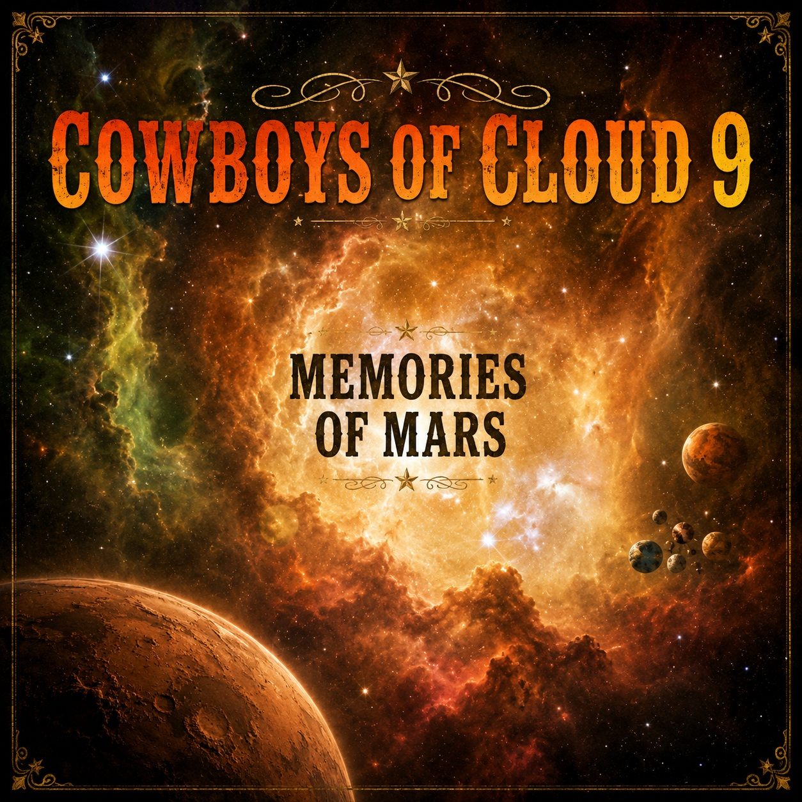

The Cowboys take their music to the frontiers of space with their Memories of Mars series. They take you on an instrumental journey beyond life on Earth to the thunderous realms of Cloud 9. They weave a story of drifting souls returning to ancient Mars. They tell us of long gone cowboys that live the simple life on the Martian range that includes floating on the Marineris River, herdin' monkeys and picking blackberries. But like all cowboys, these ancient souls long for the ones they love, seeing faces in the cloud as they sit under a starry sky. The journey ends with awe and appreciation of the Majesty of the universe as expressed in the bonus track “Heavenly Sunlight.”
| Track | Title (click to download) | Preview |
|---|---|---|
| 1 | Cowboys of Cloud 9 | |
| 2 | Drifting Souls | |
| 3 | Carlin Calling Mars | |
| 4 | Floating On The Marineris River | |
| 5 | Bolder Moves | |
| 6 | That's Right We're Herdin' Monkeys | |
| 7 | Faces In The Cloud | |
| 8 | Take The Scenic Route | |
| 9 | Under A Starry Sky | |
| 10 | Watching Yogi Bear And Picking Blackberries | |
| 11* | Heavenly Sunlight (George H. Cook) | |
| 12 | Precious Memories (J.B.F. Wright) |